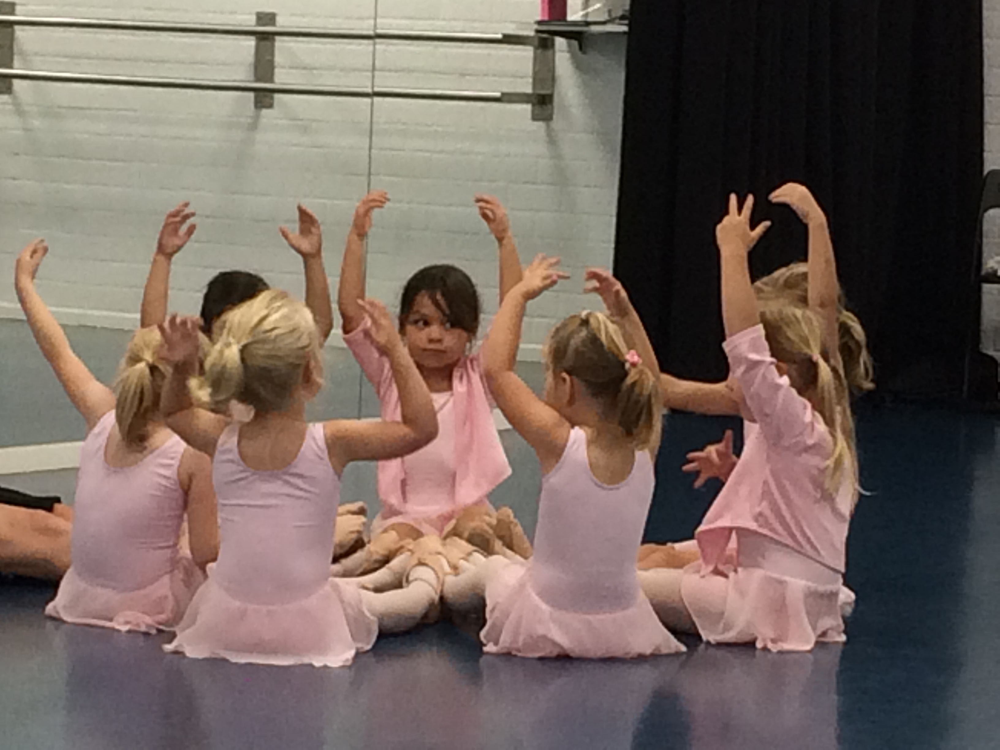
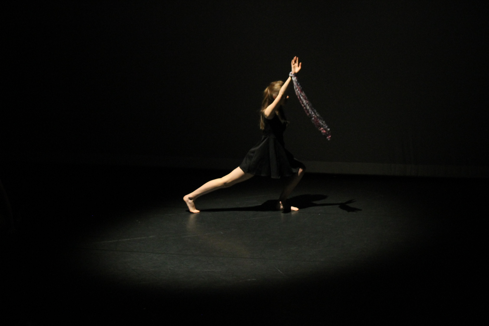

Welkom... We mogen weer!
 HOERA! de dansscholen zijn weer normaal open voor iedereen!
HOERA! de dansscholen zijn weer normaal open voor iedereen!
Dit betekent ook dat we dan weer bezoekers mogen toelaten in de foyer en dat de bar weer open is. Toegang is alleen voor leerlingen en evt 1 ouder/begeleider. Een zitplaats is nog verplicht! Binnen wachten voor de les max 5 min voor aanvang. Blijft gelden dat je thuis blijft als je klachten hebt.
We kijken er naar uit om iedereen weer te zien!
Afsluitende lessen:
 voor de oudste kleuters en de K4 kinderen sluiten we de laatste les af met een diploma les. De kinderen sluiten een belangrijke periode af. Gelukkig mag er weer publiek bij aanwezig zijn! per leerling mag er 1 persoon publiek worden uitgenodigd. We kijken er naar uit u weer te zien!
nieuw seizoen
 vanaf 20 juli start de zomervakantie. Er zijn dan geen lessen. De inschrijving voor 20/21 loopt op 18 juli automatisch af.
vanaf 20 juli start de zomervakantie. Er zijn dan geen lessen. De inschrijving voor 20/21 loopt op 18 juli automatisch af.
Wil je lekker blijven dansen?
Schrijf je dan vanaf 1 juli as. weer in voor het nieuwe seizoen 21/22.
Klik hier voor het inschrijfformulier
check ook nieuwe rooster en tarieven.
Project & Korte Cursussen
 in het nieuwe seizoen gaan we ook nieuwe cursussen aanbieden. Zo komen er op maandag ochtend een Peuterdans cursus vanaf 2 jaar en een Pilates les voor volwassenen.
Ook starten we een project uur, een pakket van 6 lessen in een bepaalde dansstijl. Dit kan varieren: zoals bijvoorbeeld Jazz/ Modern/ Pilates/ Flamenco/ Werelddans etc... Het Project-uur is ingeroosterd op maandag om 19:30. Vanaf september starten we met het Project Wereld dans ArtEZ. olv Sarah Döker. Houdt de website en Instagram/facebook in de gaten voor het aanbod.
DansDag 2 oktober 2021
 Als compensatie voor de Corona periode en de online of evt gemiste lessen bieden we onze leerlingen van afgelopen Corona periode een dansdag aan. Zaterdag 2 oktober kun je je inschrijven voor diverse leuke dans worksops. We zijn nog bezig met het rooster voor die dag en wordt z.s.m. bekent gemaakt.
Houdt de datum alvast vrij in je agenda!
Als compensatie voor de Corona periode en de online of evt gemiste lessen bieden we onze leerlingen van afgelopen Corona periode een dansdag aan. Zaterdag 2 oktober kun je je inschrijven voor diverse leuke dans worksops. We zijn nog bezig met het rooster voor die dag en wordt z.s.m. bekent gemaakt.
Houdt de datum alvast vrij in je agenda!
Corona Virus

We zijn er nog niet vanaf en houden het virus graag weg uit de studio, let dus een beetje op elkaar als we weer naar binnen mogen en denk aan de afstand van 1,5 meter ( iedereen vanaf 13 jaar) We hanteren de Corona maatregelen en zorgen voor een gedesinfecteerde barre, handgel en gemarkeerde vakken op de vloer. Natuurlijk blijf je thuis als je klachten hebt. Zo houden we het samen gezond en gezellig. Bedankt en tot dans!
Ballet Spelletje Balletris
 Typ deze code in op je toetsenbord: ⬆⬆⬇⬇⬅➡⬅➡ ba
Typ deze code in op je toetsenbord: ⬆⬆⬇⬇⬅➡⬅➡ ba